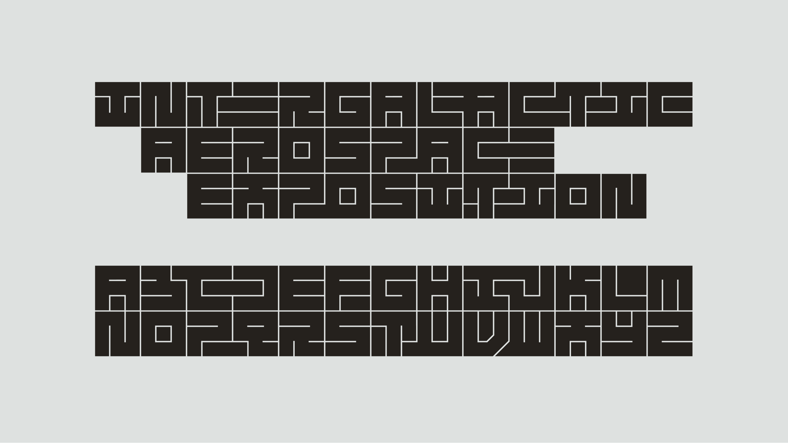

An interlocking display typeface (2017)
Influenced by the work of Dutch graphic designer Jurriaan Schrofer (1926–90). Chasmata makes use of OpenType contextual alternates to ensure any letter combination will interlock.
Related to the procedural runes I created with Processing.

Specimen · Legibility is largely ignored in favour of filling all available whitespace.